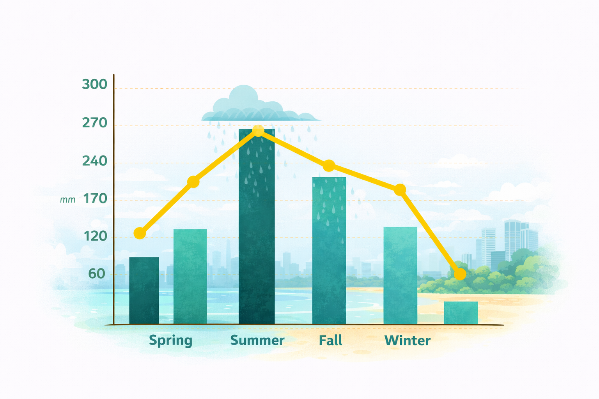
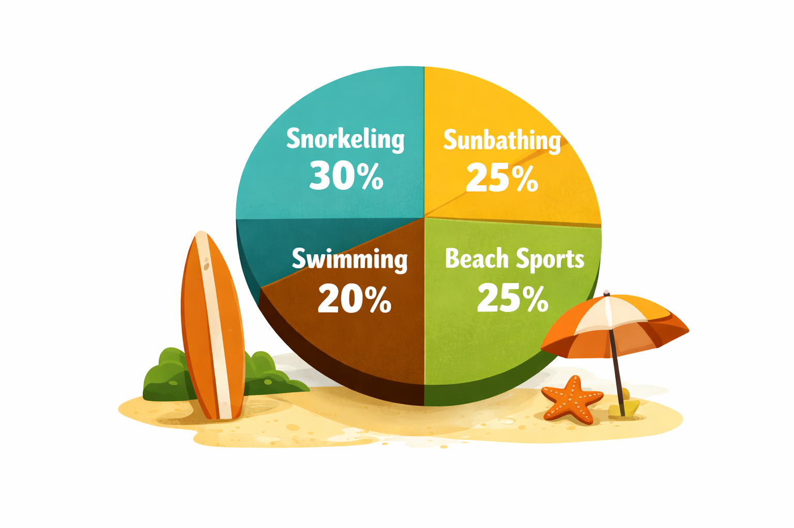

Osaka Stadt des Essens
Osaka Japans Chaos-Metropole
Osaka ist deshalb so außergewöhnlich, weil es den perfekten
Kontrast zum oft steifen Restjapans bildet: Eine Stadt ohne
Filter, in der weltklasse Streetfood, schriller Shopping-Wahnsinn
und herzliche, humorvolle Menschen aufeinandertreffen.

Ich bin ein absoluter Japan Fan und liebe es quer druch Japan mit
meiner Familie zu Reisen. Außerdem bin ich ein leidenschaftlicher
Hobby Fotograf. Dinge die ich in Japan mag sind Anime, Kultur und
das essen. Zu meinen Lieblingsstädten zählen Tokio, Hikone, Osaka
und Shirahama.
Osaka ist das absolute Paradies für alle, die Japan ohne den steifen
Alltags-Knigge erleben wollen. Hier gilt das inoffizielle Lebensmotto
„Kuidaore“ – was übersetzt so viel bedeutet wie: Iss, bis du pleite
umfällst! Wenn du Dotonbori betrittst, wirst du von gigantischen,
mechanischen Leuchtkrabben und dem Duft von frisch frittierten
Takoyaki (Oktopus-Bällchen) und Okonomiyaki (herzhafte Pfannkuchen)
begrüßt. Hier wird nicht elegant genippt, sondern laut geschmatzt,
gelacht und sich quer durch die Straßenstände gefuttert. Osaka ist
laut, bunt und nimmt sich selbst nicht zu ernst – die perfekte
Kulinarik-Therapie für hungrige Entdecker.
Rain days in Osaka

Auch wenn Osaka für seine heißen Nächte berühmt ist, öffnet der Himmel
besonders im Juni zur traditionellen Regenzeit (Tsuyu) gerne mal alle
Schleusen. Wer den Wassermassen und rund 19 Regentagen entgehen will,
plant seinen Shopping-Trip am besten für den August oder Oktober. Aber
keine Sorge: Selbst an nassen Tagen lässt dich die Stadt nicht im
Regen stehen. Die kilometerlangen, überdachten Einkaufsstraßen wie
Shinsaibashi-Suji bieten das perfekte, trockene Refugium für Food-Koma
und Kreditkarten-Therapie. Pack also einfach einen transparenten
Schirm ein und mach es wie die Locals: Der beste Schutz gegen Regen
ist ohnehin der Aufenthalt in einer dampfenden Takoyaki-Bude!
Krabbe Dotonbori
Osaka ist das absolute Paradies für alle, die Japan ohne den
steifen Alltags-Knigge erleben wollen. Hier gilt das inoffizielle
Lebensmotto „Kuidaore“ was übersetzt so viel bedeutet wie: Iss,
bis du pleite umfällst!

Shopping Therapie
Wer nach dem Food-Koma eine Kreditkarten-Therapie braucht, biegt
einfach nach Shinsaibashi ab. Osaka ist ein Shopping-Mekka der
Extraklasse, das von edlen Boutiquen bis zu völlig abgedrehten
Vintage-Läden in Amerikamura bietet.

Das Beste an Osaka? Wenn dir der Großstadttrubel doch mal zu viel
wird, bist du in nur rund 40 Minuten mit der Kintetsu-Linie im
historischen Nara. Nara ist weltberühmt für seine frei herumlaufenden,
heiligen Sika-Hirsche, die gelernt haben, sich für Futter höflich zu
verbeugen. Aber Vorsicht: Sobald du die speziellen Hirsch-Cracker
(Shika-Senbei) in der Hand hältst, mutieren die süßen Bambis zu einer
ultra-zielstrebigen Betteleinheit, die dir auch gerne mal sanft in den
Hintern zwickt. Es ist der perfekte, witzige Tagesausflug, um riesige
Buddha-Statuen zu bestaunen und tierische Selfies zu machen, bevor es
abends zurück in die Neonwelt von Osaka geht.
Folge mir für mehr Inhalte dieser Art und
teile den Artikel mit deinen Freunden!